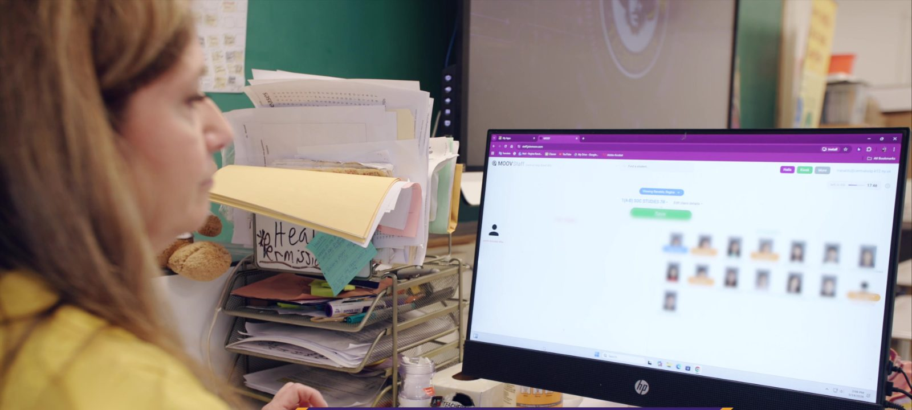

It’s 9:05 on a Tuesday morning and three teachers haven't submitted attendance yet. So someone in the front office picks up the phone, and starts chasing them down. "Hi, sorry to interrupt, can you send your attendance? We've got a parent on the line." The teacher stops mid-lesson, scrambles to remember if first period was already done, and clicks submit. The office crosses one classroom off the list and moves to the next.
Multiply that by every morning of the school year. It's a lot of time spent on something that should happen on its own.
We built MOOV's automated attendance to take that off everyone's plate. Here's how it works.
What "automated attendance" really means

Most of the time, taking attendance means a teacher stops teaching, looks up, and goes student by student. Even on a good day that's two to three minutes of class, every period, every day.
With MOOV, students tap in with their ID card when they walk into the room. Their name and photo pop up on the teacher's screen, with present and absent students side by side. The teacher glances, verifies, and clicks send.
One of our science teachers, Mr. Schwartz at John F. Kennedy Middle School, put it well:
"It's cut down the amount of time I need to check attendance. I don't need to go student by student... it cuts it down from like a 1-2 minute affair to like 10 seconds maximum."
Ten seconds. And the bigger shift is that students are taking their own attendance. As Dr. Mosca, the principal at Comsewogue High School, told us, "The students are taking their own attendance by tapping into their classes, and then all the teachers need to do is verify and click send. It really saves the teachers' time, which is more time for instruction."
More time for instruction. That's the point.
The people no one thinks about: the front office
When attendance is manual, the front office is the safety net. Every missing submission, every "I forgot," every substitute who circled a kid absent who was actually there. It all lands on the attendance office's desk. They're the ones making the calls, reconciling the lists, and fielding the parent who wants to know where their child is right now.
Automated attendance changes their day too. When a student taps in, it's logged instantly and accurately. No waiting on a teacher, no phone tag. Jennifer Greco, who works in the attendance office at Kings Park High School, put it plainly:
"It's so easy to find somebody. Just type in a name, it's right there... As soon as they tap into the classroom, it automatically goes to their account and shows that they're tardy. I'm not worrying about a teacher logging a student's tardy."
Substitutes are usually a problem for accuracy. Jennifer again: "If there's a substitute, the students can still tap into a classroom, and I can still verify that they are there... So if the sub is still circling that they're absent, but yet a student tapped in, it makes the accuracy better."
That means fewer interruptions for teachers, fewer phone calls for the office, and a number everyone can trust.
It works with the SIS you already use
The question we get most is whether this plays nicely with your student information system.
It does. Whatever your district runs on, MOOV's automated attendance syncs right into it, with no double entry, no exporting spreadsheets, and no manual reconciling at the end of the day.
- Automated PowerSchool attendance: student tap-ins can sync straight to PowerSchool, with the click of just one button.
- Infinite Campus attendance: the same hands-off sync, straight into Infinite Campus.
- Skyward attendance: tap-ins flow directly into Skyward without a second login.
- Aspen attendance: fully integrated, so your Aspen data stays current automatically.
- eSchoolData attendance: synced in real time for districts running eSchoolData.
- SchoolTool attendance: no more logging into SchoolTool and going student by student. MOOV handles it.
One of our teachers, Adam Parente at Comsewogue, said it's "a lot clearer than logging onto SchoolTool and taking attendance," because the photos pop up and the present and absent split is right there in front of you. The easy, visual experience on MOOV's side becomes accurate, official data on your SIS side. You get both.
So whether you're searching for automated PowerSchool attendance, a cleaner Skyward attendance workflow, or a way to stop logging into SchoolTool one student at a time, the answer is the same. MOOV does the syncing so your people don't have to.
What you get back
Teachers get their time and focus back. No more "did I do first period?" running in the background. As Joel Sutherland, a math teacher at Comsewogue, told us: "With MOOV, I already know it's done. It's just a click. Just one less thing to worry about."
The front office stops chasing. Accurate numbers come in on their own. The phone calls, the reconciling, and the substitute guesswork are gone.
Administrators get a count they can trust, instantly. No waiting, no assuming. They know who's in the building and who's in each room, right now.
It's not just about the time, though the time is real. It's one less thing to keep track of on a busy school morning, for the teacher and for the person who used to have to call them. That's the goal: take the busywork off everyone's plate so teachers can teach.